Add customization options on an avatar
The avatar we are using for exemplification benefits from customization options, such as color and proportions. Below you can learn how to add and debug them, so that you can customize the avatar in the Animaze app by changing its colors and size, or adding props to it :)
More info on this subject can be read in the Animaze Editor Manual.
Let’s start.
1. In the Editor Panel, click on the Customization Option to open the configurator window.
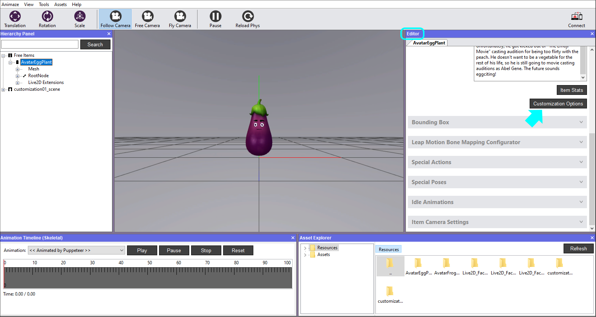
2. Go to the Color tab and click Add.
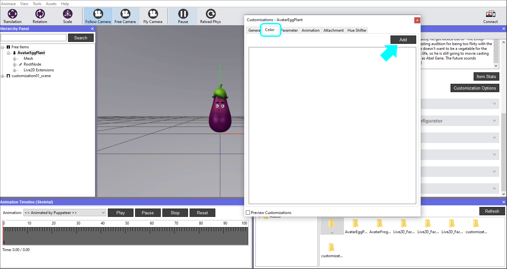
3. Click on the Color customization tab to expand it, then click on the Color Mask box to select the texture from the assets library.
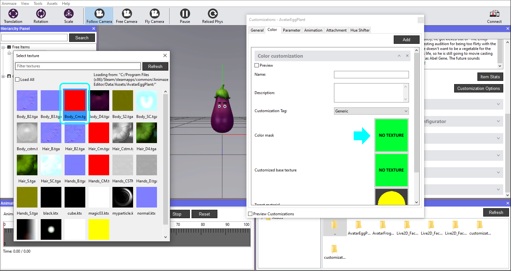
4. Repeat the action for the Customized base texture, selecting the proper texture.
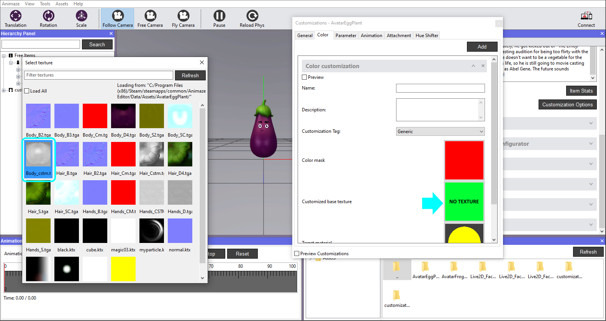
5. Time to select the Target Material, in this case it’s the Body.
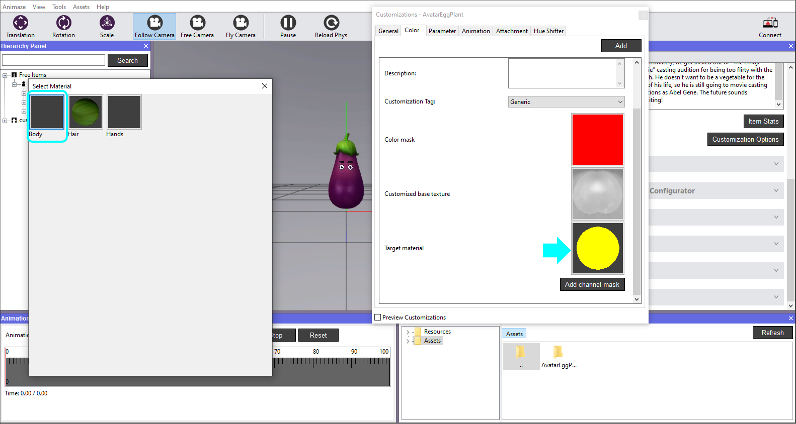
6. The color mask allows the adding of one or multiple colors on the avatar. It was created with 1 color channel, and it needs to be added in order to work. Click on the Add channel mask button to begin this process. A window with Channel targets will appear, we will select the Red one.
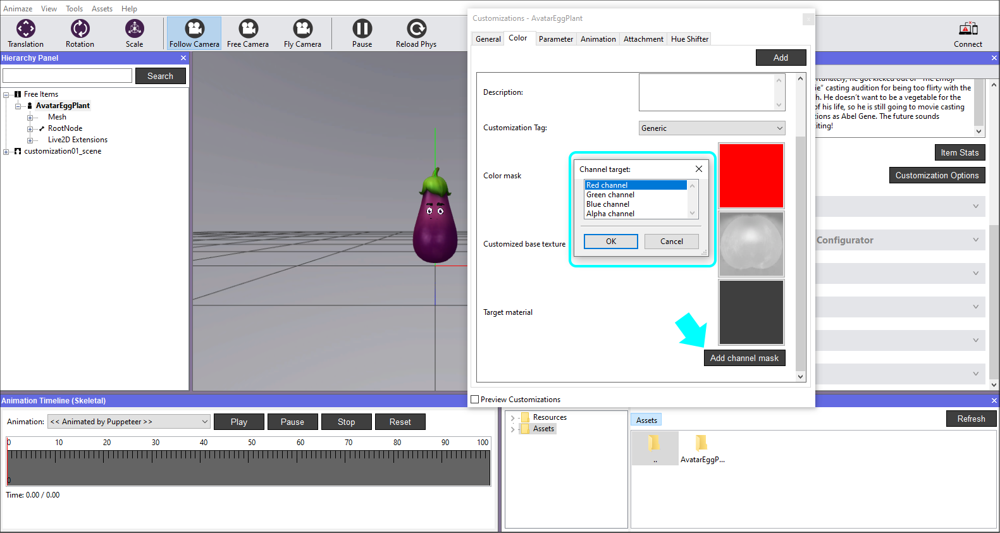
7. Set the correct tag in Customization Tag drop-down list (this helps the Animaze Apps to group customization options into user-friendly categories like eyes, skin, hair etc.). Then set the desired color for this channel (we selected a color close to its default one).
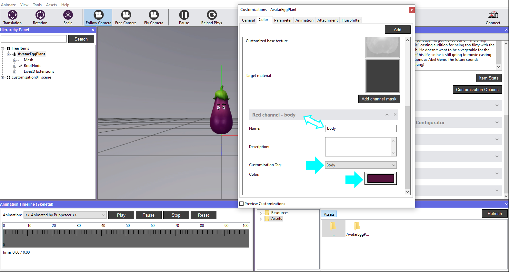
8. Let’s add an animation customization now. In the Editor Panel, click on the Customization Options button, go to the Animation tab and click Add.
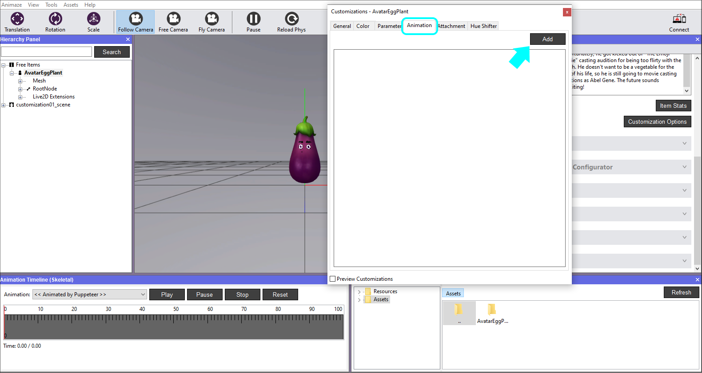
9. Expand the newly added customization and click on the Browse button, find the source folder that contains the .fbx files, open the Animations folder and select your animation.
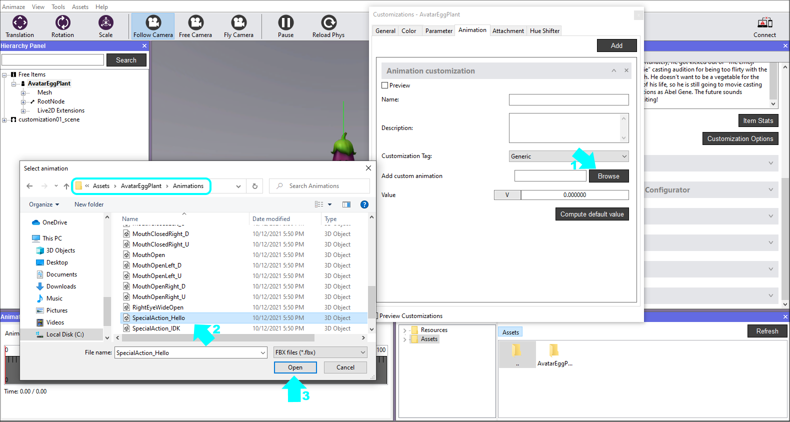
10. Clicking the Compute default value button will calculate the middle range of the scaling animation. The particular scaling animation used here features the default pose around the middle of the animation timeline, but to get a very precise value, the Compute default value button evaluates the animation in 1000 samples and checks each sampled pose to the default pose, trying to find the exact match. Once found, it automatically fills the Value text box with the percentage of the animation where it matches the default pose.
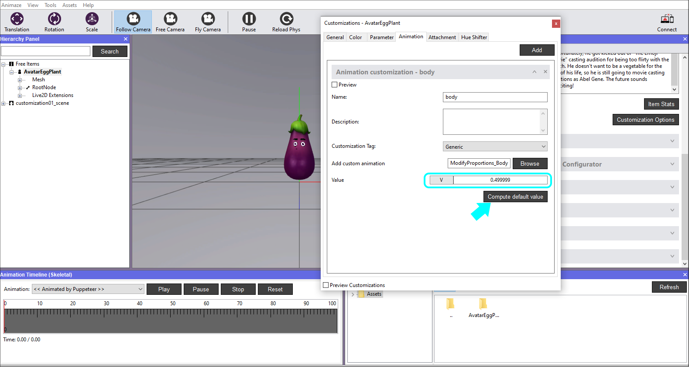
11. Set the correct tag by clicking on the drop down list of the Customization Tag. This tag helps the Animaze Apps to group customization options into user-friendly categories like eyes, skin, hair etc.
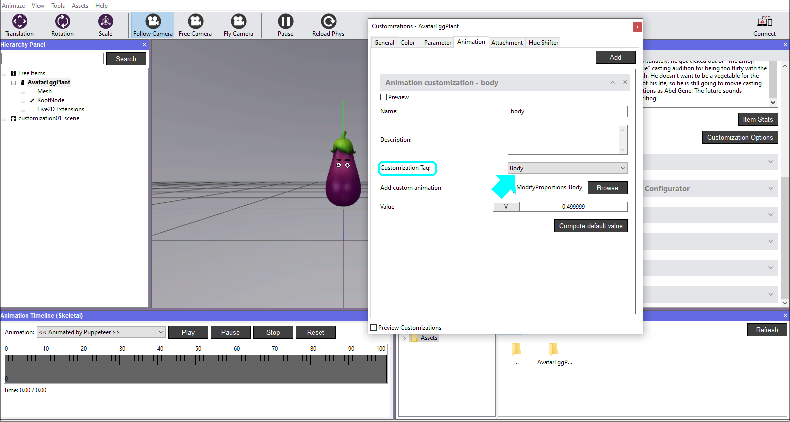
12. The avatar also contains prop bones, meaning that we are able to add a hat to it, glasses and a mustache. In the Customization Options window, General tab, click on the Detect available attachment slots button to set up the Prop customization. The system will add a Prop tab for every detected prop-bone of the avatar.
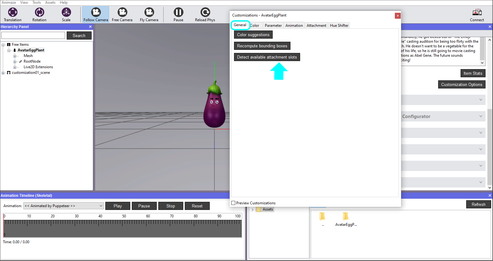
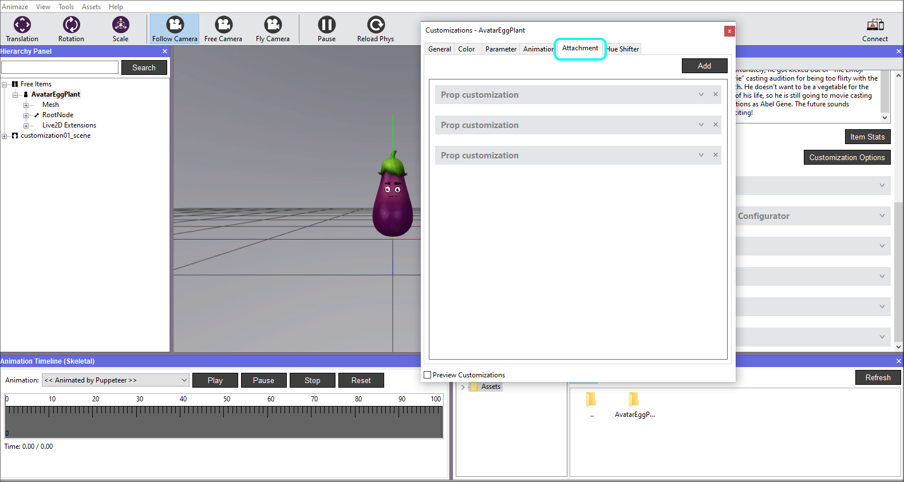
13. Expand each Prop Customization and set the corresponding Tag for each (Hat, Facial_Hair & Glasses) so that the system can recognize them and attach the props accordingly when used. The Bone and Prop Type have already been filled by the system in the previous step. This can also be added manually when needed.
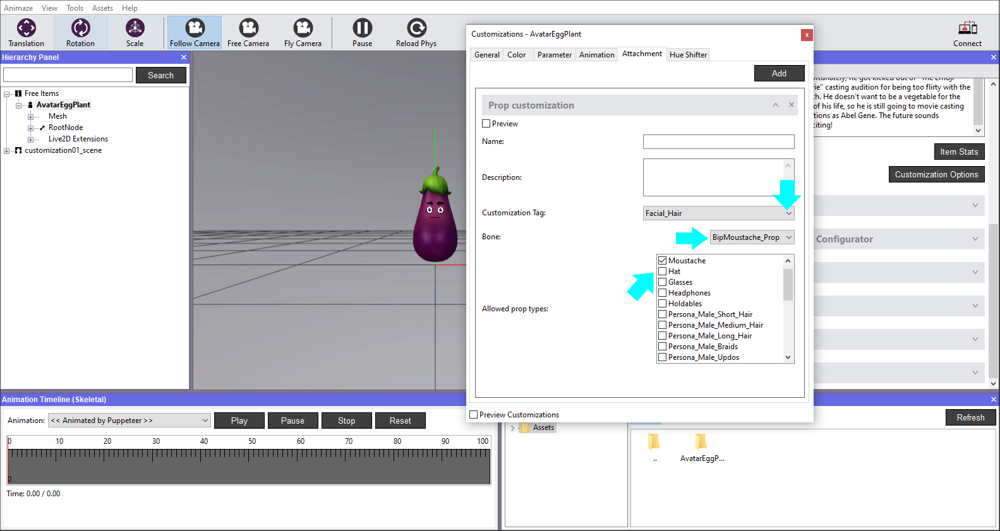
Now that you are done with the additions of all the available customizations, let’s use the debuggers to see how everything is working.
14. Go to the Tools menu and select Customization Debugger. A floating window will appear.
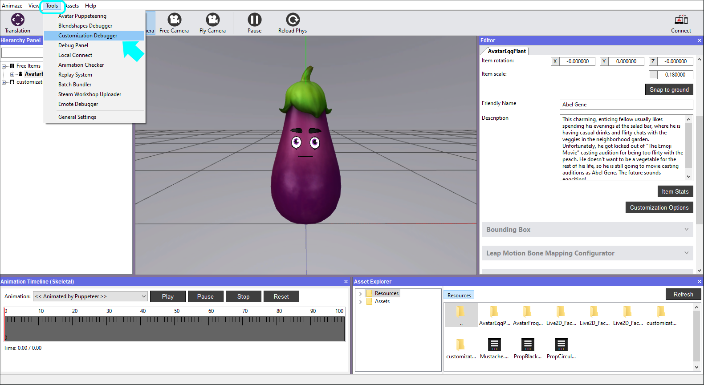
15. In the Color tab of the Debugger, click on the color bar that you want to preview, choose a color from the Color Picker and hit OK when you are happy with the results. You can either save the new colors, or revert to the previous ones by using the Save & Revert buttons of this debugger.
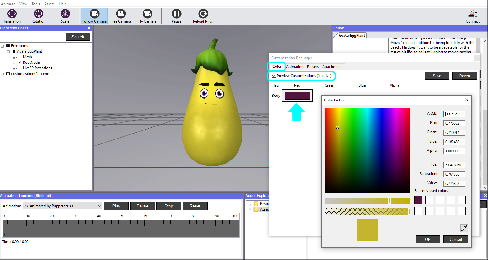
16. In the Animation tab of the Debugger, click, hold and slide the mouse right or left to change the size of the avatar. You can either save the new size, or revert to the previous one by using the Save & Revert buttons of this debugger.
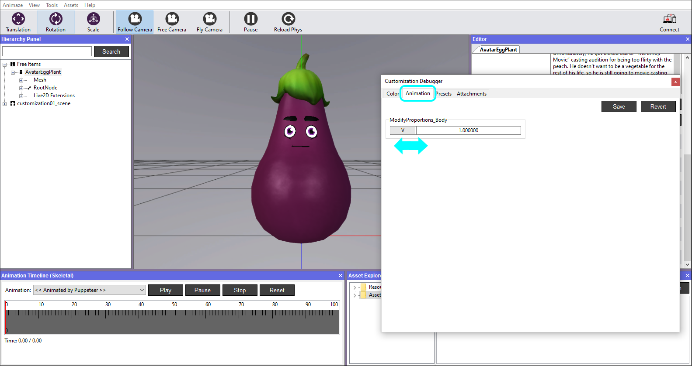
17. In the Attachments tab of the Debugger, click on the Props you want to try out and see the avatar in the viewport.
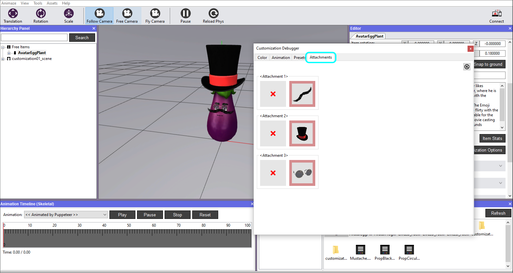
Note that once you close the Customization Debugger, all unsaved data is lost, as the avatar returns to its previous state, colors and sizes, as when you finished adding the textures in the customization options.
18. Save item in Hierarchy Panel when you are done. If you exit the Animaze Editor without saving, all of your work will be lost.

More info on this subject can be read in the Animaze Editor Manual, in the Customization Options section.